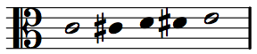
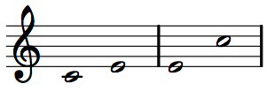

Musicianship Resources
Intervals and dyads
An interval is the distance between two pitches, usually measured as a number of steps on a scale.
A dyad is a pair of pitches sounding together (in other words, a two-note chord). Since a dyad is defined by the interval between the two pitches, dyads are often simply called intervals.
Thus, the term interval regularly refers both to the distance between two pitches on a scale and to a dyad whose pitches are separated by that distance.
Chromatic intervals
The simplest way to measure intervals, particularly at the keyboard, is to count the number of half-steps, or semitones, between two pitches. To determine the chromatic interval between C4 and E4, for example, start at C4 and ascend the chromatic scale to E4, counting steps along the way: C#4, D4, D#4, E4. E4 is four semitones higher than C4. Chromatic intervals are notated with a lower-case i followed by an Arabic numeral for the number of semitones. C4–E4 is four semitones, or i4.

Diatonic intervals
More commonly for tonal music, we are interested in the number of steps on the diatonic (major or minor) scale. This is a bit tricky—not because it's difficult, but because it's counterintuitive. Unfortunately, the system is too old and well engrained to change it now! But once you get past the initial strangeness, diatonic intervals are easy.
When identifying a diatonic interval, begin with the letter names only. That is, treat C, C-sharp, and C-flat all as C for the time being. Next, count the number of steps (different letters) between the two pitches in question, counting both pitches. This will give you the generic interval.
For example, from C4 to E4, counting both C and E, there are three diatonic steps (three letter names): C, D, E. Thus, the generic interval for C4–E4 is a third. The same is true for any C to any E: C#4 to E4, Cb4 to E#4, etc. They are all diatonic thirds.

Often more specificity is needed than generic intervals can provide. That specificity comes in the form of interval quality. And combining quality with a generic interval produces a specific interval.
There are five possible interval qualities:
- augmented (A)
- major (M)
- perfect (P)
- minor (m)
- diminished (d)
To obtain an interval's quality, find both the generic interval and the chromatic interval. Then consult the following table to find the specific interval.
{kind=link}
For example, C4–E4 is a generic third, and has a chromatic interval of i4. A third that encompasses four semitones is a major third (M3). Note that both generic interval and chromatic interval are necessary to find the specific interval, since there are multiple specific diatonic intervals for each generic interval and for each chromatic interval.
Note that some generic intervals can be augmented, perfect, or diminished, and other intervals can be augmented, major, minor, or diminished. There is no generic interval that can be both major/minor and perfect; if it can be major or minor, it cannot be perfect, and if it can be perfect, it cannot be major or minor. An augmented version of an interval is always one semitone wider than major or perfect; diminished is always one semitone smaller than minor or perfect.
Solfège can also help to determine the specific interval. Each pair of solfège syllables will have the same interval, no matter what the key, as long as it is clear which syllable is the lower pitch and which is the upper pitch. Memorizing the intervals between solfège pairs can help speed along your analysis of dyads as they appear in music. For example, knowing that do–mi, fa–la, and sol–ti are always major thirds and knowing that re–fa, mi–sol, la–do, and ti–re are always minor thirds will allow for faster analysis of dyads in major keys.
Compound intervals
The intervals discussed above, from unison to octave, are called simple intervals. Any interval larger than an octave is considered a compound interval. Take the interval C4 to E5. The generic interval is a tenth. However, it functions the same as C4 to E4 in almost all musical circumstances. Thus, the tenth C4–E5 is also called a compound third. A compound interval takes the same quality as the corresponding simple interval. If C4–E4 is a major third, then C4–E5 is a major tenth.

Interval inversion
In addition to C4–E4 and C4–E5, E4–C5 also shares a similar sound and musical function. In fact, any dyad that keeps the same two pitch classes but changes register will have a similar sound and function. However, the fact that E4–C5 has E as its lowest pitch instead of C means that it has a different generic interval: E4–C5 is a sixth, not a third. Because of that difference, it will also play a different musical function in some circumstances. However, there is no escaping the relationship.
Dyads formed by the same two pitch classes, but with different pitch classes on bottom and on top, are said to be inversions of each other, because the pitch classes are inverted. Likewise, the intervals marked off by those inverted dyads are said to be inversions of each other.
Again, take C4–E4 (major third) and E4–C5 (minor sixth). These two dyads have the same two pitch classes, but one has C on bottom and E on top, while the other has E on bottom and C on top. Thus, they are inversions of each other.

Three relationships exhibited by these two dyads hold for all interval inversions.
First, the chromatic intervals add up to 12. (C4–E4 = i4; E4–C5 = i8; i4–i8 = i12) This is because the two intervals add up to an octave (with an overlap on E4).
Second, the two generic interval values add up to nine (a third plus a sixth, or 3 + 6). This is because the two intervals add up to an octave, and one of the notes is counted twice when you add them together. (Remember the counterintuitive way of counting off diatonic intervals, where the number includes the starting and ending pitches, and when combining inverted intervals, there is always one note that gets counted twice—in this case, E4.)
Lastly, the major interval inverts into a minor, and vice versa. This always holds for interval inversion. Likewise, an augmented interval's inversion is always diminished, and vice versa. A perfect interval's inversion is always perfect.
major ↔ minor
augmented ↔ diminished
perfect ↔ perfect
Interval inversion may seem confusing and esoteric now, but it will be an incredibly important concept for the study of voice-leading and the study of harmony.
Melodic and harmonic intervals
The last distinction between interval types to note is melodic v. harmonic intervals. This distinction is simple. If the two pitches of a dyad sound at the same time (a two-note chord), the interval between them is a harmonic interval. If the two pitches in question are sounded back-to-back (as in a melody), the interval between them is a melodic interval. This distinction is important in voice-leading, where different intervals are preferred or forbidden in harmonic contexts than in melodic contexts. The difference is also important for listening, as hearing melodic and harmonic intervals of the same quality requires different techniques.
Consonance and dissonance
Intervals are categorized as consonant or dissonant based on their sound (how stable, sweet, or harsh they sound), how easy they are to sing, and how they best function in a passage (beginning, middle, end; between certain other intervals; etc.). Different standards apply to melody and harmony. The following categories will be essential for your work in strict voice-leading, and they will be a helpful guide for free composition and arranging work, as well.
Melodic consonance and dissonance
The following melodic intervals are consonant, and can be used in strict voice-leading both for successive pitches and as boundaries of stepwise progressions in a single direction:
- All perfect intervals (P4, P5, P8)
- All diatonic steps (M2, m2)
- Major and minor thirds
- Major and minor sixths
All other melodic intervals are dissonant, and must be avoided for successive pitches and as boundaries of stepwise progressions in a single direction, including:
- All augmented and diminished intervals (including those that are enharmonically equivalent to consonant intervals, such as A2 and A1)
- All sevenths
Harmonic consonance and dissonance
The following harmonic intervals are imperfect consonances, and can be used relatively freely in strict voice-leading (except for beginnings and endings):
- Major and minor thirds
- Major and minor sixths
The following harmonic intervals are perfect consonances, and must be used with care in limited circumstances in strict voice-leading:
- All perfect intervals (P1, P4, P5, P8)
All other harmonic intervals are dissonant, and must be employed in very specific ways in strict voice-leading, including:
- All diatonic steps (M2, m2)
- All augmented and diminished intervals (including those that are enharmonically equivalent to consonant intervals, such as A2 and A1)
- All sevenths